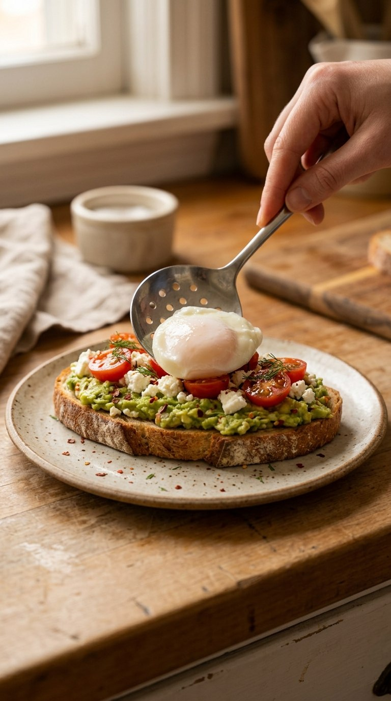

In development · iPhone, iPad & MacWatch it.
Techie Traveler Foodie
Watch it.
Cook it.
Your favourite recipe videos, made easier to cook. Measured ingredients. Clear steps. A little help when you need it.
Explore the channelZest is not yet available on the App Store.

See the recipe
Watch the matching Techie Traveler Foodie video, free on YouTube.
Cook at your pace
Follow one step at a time, adjust servings and keep a timer close.
Make a little plan
Save favourites, plan meals and gather your shopping list.
Planned Zest Pro
A cookbook that grows with the channel.
Keep a Free recipe collection, or unlock the growing Pro cookbook with a one-time purchase. Public recipe videos remain free.
Optional chef voice uses your own Gemini API key. Google usage charges are separate.
How Zest works